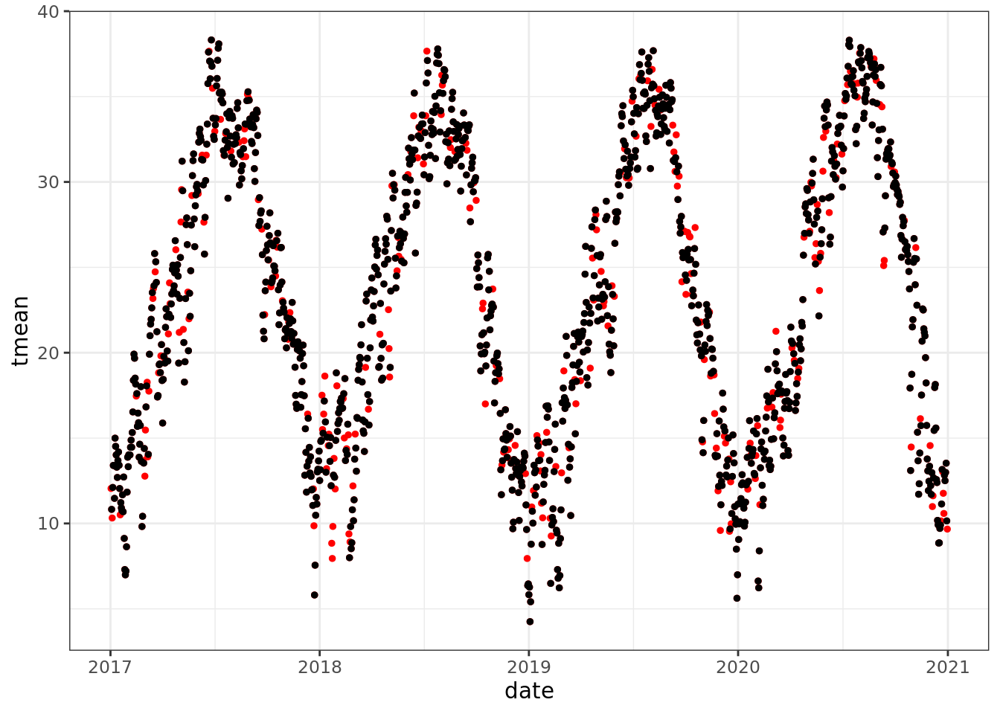
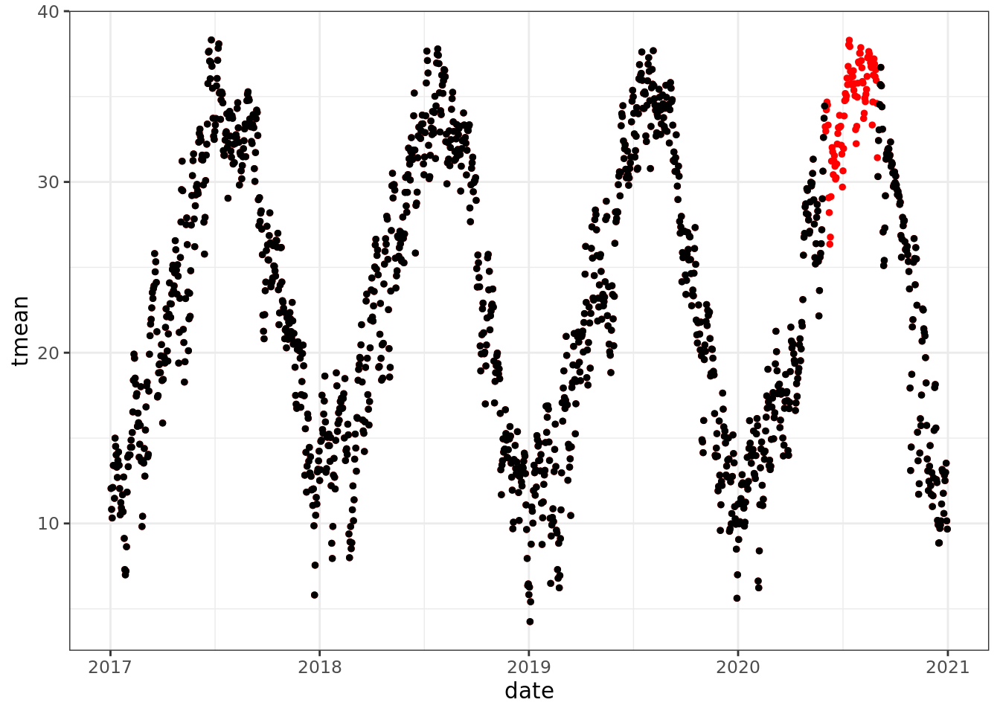
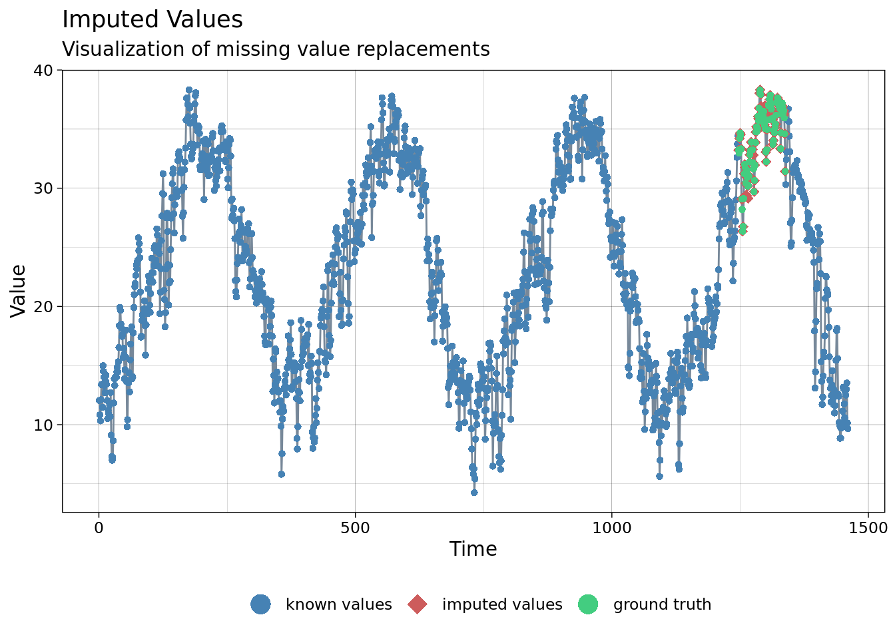
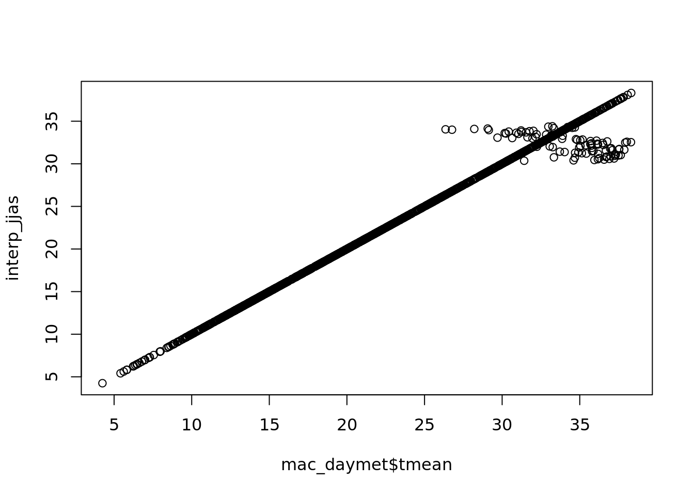
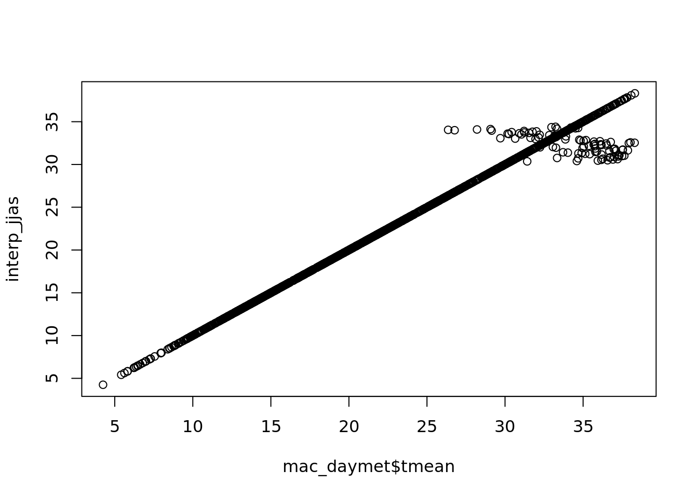
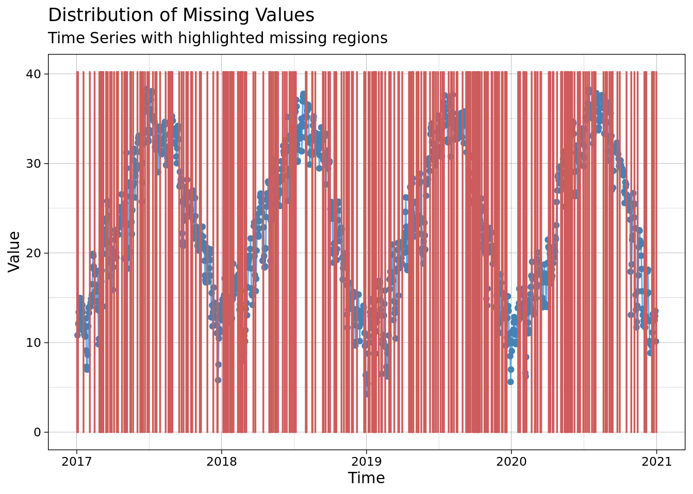

11 Session 11: Missing Data
11.1 Missing Data
11.1.1 General Concepts
- a frequent problem
- can bias estimates of parameters and their variances
- lots of different ways to handle it
- too often, solution is to throw out data - easiest, and easiest to justify.
But I am going review a few examples of how to get around missing data.
11.1.2 Where does missing data come from (or go?)
Types of missing data
11.1.3 What to do about missing data
How to record missing data - what does NULL mean? What does NA mean? - This is almost never specified. Some options: - observation was not recorded, or was recorded and not entered - data was collected and entered, but later found to be suspect, and removed - the data is in my notebook / I can’t be bothered to enter it - there was nothing to measure; a value here would not make sense
11.1.4 Types of missing data
The first two can be safely removed (Gelman and Hill 2006) - Missing completely at random. A useful assumption; difficult to prove. - Missing at random. Missingness depends on observed variables - e.g. one species of fish can be observed but not caught and measured, or a sensor only works when the temperature is below some threshold. - Missing not at random - Missing but depends on unobserved variable - Missing but depends on the variable itself
11.1.5 Approaches
If there are a few missing data points (<5-10%) - delete records with missing data - replace missing data If there are more, this can lead to bias. - MICE - Missing data in Bayesian models
11.1.5.1 MICE: Multiple Imputation by Chained Equations
This is one of the most commonly used approaches, because it is very powerful.
A few limitations of the MICE approach include: it requires the assumption that data are missing completely at random. Further, it is based on empirical analysis rather than theory.
Algorithm: - create multiple copies of data - impute missing values - use the distribution of a variable to impute plausible values for the missing data - perform analysis on the values - combine results
See Rubin 1987 and White et al 2011 for background on the MICE algorithm.
11.1.5.2 Interpolation
There are a variety of methods for interpolating missing data in time series. This is frequently used for environmental sensors - weather stations, eddy covariance towers, temperature or soil moisture data.
Lets look at an example. This dataset doesn’t have any missing data, so we will make some.
library(lubridate)##
## Attaching package: 'lubridate'## The following objects are masked from 'package:base':
##
## date, intersect, setdiff, unionlibrary(dplyr)
library(imputeTS)## Registered S3 method overwritten by 'quantmod':
## method from
## as.zoo.data.frame zoolibrary(forecast)
library(ggplot2)
theme_set(theme_bw())
mac_daymet <- readr::read_csv('../data/mac_daymet.csv') %>%
filter(year(date) > 2016)## Rows: 7665 Columns: 7## ── Column specification ────────────────────────────────────────────────────────
## Delimiter: ","
## dbl (6): precip, tmax, tmin, tmean, trange, vpd
## date (1): date##
## ℹ Use `spec()` to retrieve the full column specification for this data.
## ℹ Specify the column types or set `show_col_types = FALSE` to quiet this message.mac_nas <- readr::read_csv('../data/mac_nas.csv')## Rows: 1460 Columns: 7## ── Column specification ────────────────────────────────────────────────────────
## Delimiter: ","
## dbl (6): precip, tmax, tmin, tmean, trange, vpd
## date (1): date##
## ℹ Use `spec()` to retrieve the full column specification for this data.
## ℹ Specify the column types or set `show_col_types = FALSE` to quiet this message.ggplot(data = mac_daymet) +
geom_point(aes(date, tmean))ggplot() +
geom_point(data = mac_daymet, aes(date, tmean), color = 'red', size = 1)+
geom_point(data = mac_nas, aes(date, tmean), size = 1)## Warning: Removed 272 rows containing missing values (geom_point).
mac_nojja <- mac_daymet %>%
mutate(tmean = ifelse(month(date) %in% 6:8 & year(date) == 2020, NA, tmean))
ggplot() +
geom_point(data = mac_daymet, aes(date, tmean), color = 'red', size = 1)+
geom_point(data = mac_nojja, aes(date, tmean), size = 1)## Warning: Removed 92 rows containing missing values (geom_point).
Now, what do we do?
Well, lets look for a related variable -
pairs(mac_daymet %>% filter(year(date) == 2020) %>% select(precip, tmin, tmean, vpd, date)) It looks like we can do a decent job of predicting tmean from tmin (or tmax for that matter … lets pretend that we don’t know the relationship tmean = (tmin + tmean) / 2 or have the ability to estimate )
It looks like we can do a decent job of predicting tmean from tmin (or tmax for that matter … lets pretend that we don’t know the relationship tmean = (tmin + tmean) / 2 or have the ability to estimate )
tmean_model <- lm(tmean ~ tmin, data = mac_nas)
tmean_model2 <- lm(tmean ~ tmin + precip, data = mac_nas)
tmean_model3 <- lm(tmean ~ vpd + tmin, data = mac_nas)
tmean_model4 <- lm(tmean ~ vpd + tmin + precip, data = mac_nas)
summary(tmean_model4)##
## Call:
## lm(formula = tmean ~ vpd + tmin + precip, data = mac_nas)
##
## Residuals:
## Min 1Q Median 3Q Max
## -4.9949 -0.9598 0.0878 1.0588 5.2823
##
## Coefficients:
## Estimate Std. Error t value Pr(>|t|)
## (Intercept) 8.8403651 0.0996198 88.741 < 2e-16 ***
## vpd -0.0018815 0.0001377 -13.663 < 2e-16 ***
## tmin 1.0703254 0.0077675 137.795 < 2e-16 ***
## precip -0.1242346 0.0168094 -7.391 2.75e-13 ***
## ---
## Signif. codes: 0 '***' 0.001 '**' 0.01 '*' 0.05 '.' 0.1 ' ' 1
##
## Residual standard error: 1.5 on 1184 degrees of freedom
## (272 observations deleted due to missingness)
## Multiple R-squared: 0.9687, Adjusted R-squared: 0.9686
## F-statistic: 1.221e+04 on 3 and 1184 DF, p-value: < 2.2e-16anova(tmean_model, tmean_model2, tmean_model3, tmean_model4)## Analysis of Variance Table
##
## Model 1: tmean ~ tmin
## Model 2: tmean ~ tmin + precip
## Model 3: tmean ~ vpd + tmin
## Model 4: tmean ~ vpd + tmin + precip
## Res.Df RSS Df Sum of Sq F Pr(>F)
## 1 1186 3311.5
## 2 1185 3086.1 1 225.48 100.150 < 2.2e-16 ***
## 3 1185 2788.7 0 297.34
## 4 1184 2665.7 1 122.98 54.624 2.751e-13 ***
## ---
## Signif. codes: 0 '***' 0.001 '**' 0.01 '*' 0.05 '.' 0.1 ' ' 1### another way to check if we need the full model
MASS::stepAIC(tmean_model4)## Start: AIC=968.15
## tmean ~ vpd + tmin + precip
##
## Df Sum of Sq RSS AIC
## <none> 2666 968.1
## - precip 1 123 2789 1019.7
## - vpd 1 420 3086 1140.1
## - tmin 1 42750 45416 4334.6##
## Call:
## lm(formula = tmean ~ vpd + tmin + precip, data = mac_nas)
##
## Coefficients:
## (Intercept) vpd tmin precip
## 8.840365 -0.001882 1.070325 -0.124235### ok. both RSS and AIC say 'keep them all'!
nas <- which(is.na(mac_nas$tmean))
pred_tmean <- predict(object = tmean_model4, newdata = mac_nas[nas,])
mac_pred <- mac_nas
mac_pred$tmean[nas] <- pred_tmean
plot(tmean_model4) 

plot(pred_tmean, mac_daymet$tmean[nas]) +
lines(0:40,0:40, lty = 2) 
## integer(0)hist(pred_tmean - mac_daymet$tmean[nas], breaks = 20)The book ’forecating practices and principles:
https://otexts.com/fpp2/missing-outliers.html
ggplot_na_imputations(x_with_na = mac_nojja$tmean,
x_with_imputations = mac_pred$tmean,
x_with_truth = mac_daymet$tmean )
ggplot_na_distribution(mac_nas$tmean, x_axis_labels = mac_nas$date)
interp <- na.interp(mac_nas$tmean)
plot(mac_daymet$tmean, interp)
interp_jjas <- na.interp(mac_nojja$tmean)
plot(mac_daymet$tmean, interp_jjas)
ggplot_na_distribution(mac_nas$tmean, x_axis_labels = mac_nas$date)
ggplot_na_distribution(mac_nojja$tmean, x_axis_labels = mac_nojja$date)
ggplot_na_intervals(mac_nas$tmean)
ggplot_na_intervals(mac_nojja$tmean)Gap Filling - weather, time series
imp <- na_interpolation(mac_nas, option = 'spline')
ggplot_na_imputations(x_with_na = mac_nas$tmean, x_with_imputations = imp$tmean, x_with_truth = mac_daymet$tmean )
imp <- na_interpolation(mac_nojja, option = 'stine')
ggplot_na_imputations(x_with_na = mac_nojja$tmean, x_with_imputations = imp$tmean, x_with_truth = mac_daymet$tmean )Your turn: try some different aproaches to missing data imputation:
- replace with overall mean
na_mean - replace with moving average
na_ma - replace with … random draws?
na_random
my_ts <- function(x){
ts(x, start = c(2017, 1),
end = c(2020, 365),
deltat = 1/365)
}
imp <- na_seasplit(my_ts(mac_nojja$tmean))
ggplot_na_imputations(x_with_na = my_ts(mac_nojja$tmean),
x_with_imputations = imp,
x_with_truth = my_ts(mac_daymet$tmean ))11.1.5.3 Bayesian Imputation
The brms package also provides utilities for handling missing data, including prior to model fitting using MICE and related methods as well as during model fitting. These are explained in the vignette by Brukner 2021 “Handle Missing Values with brms” and the online version of Statistical Rethinking Chapter 14.
The same can be done using JAGS, it is possible to estimate variables as model parameters during model fitting. With both JAGS and brms, it is necessary to specify a model for any variable with data being estimated (e.g. predictor variables must be explictly modeled as a response, even if drawn directly from a prior).
It is possible to use the MICE algorithm in Bayesian analysis. The disadvantage of using MICE with many Bayesian methods such as MCMC is that it increases the amount of computing time as a linear function of the number of datasets with imputed values (often 5-20x). Since many models can take hours or days to fit, this is an important limitation to consider.
11.1.5.4 Estimating SE from previously published findings to support Meta-analysis
A tangent: Meta-analysis itself can be viewed as a missing data problem. Combining information from two studies that were conducted in different conditions or treatment levels, I am trying to make inference about a single variable such as response rate even if the studies measured different responses. However, that is not the focus here.
Very often, meta-analysis models require measures of variance around a particular treatment response in order to weight the studies. However, the original studies have different goals than the meta-analysis, so these values may not be reported. A standard convention is to reject studies that do not have the required estimates of standard error. However, this can limit inference. It can also motivate sharing data - that would reduce the need for such laborious and uncertain approximations.
Some methods for estimating SE from other statistics are summarized in LeBauer 2020 (developed at the time of LeBauer et al 2013 but not given a doi until 2020), before the text Koricheva et al 2013 gave a related perspective. LeBauer et al 2013 also provide examples for estimating these statistics even where they can’t be estimated while fitting a meta-analysis.
11.1.6 References
Gelman and Hill 2006. Ch 25: Missing Data Imputation in “Data Analysis Using Regression and Multilevel/Hierarchical Models.” Cambridge University Press http://www.stat.columbia.edu/~gelman/arm/missing.pdf
Su, Y.-S., Gelman, A., Hill, J., & Yajima, M. (2011). Multiple Imputation with Diagnostics (mi) in R: Opening Windows into the Black Box. Journal of Statistical Software, 45(2), 1–31. https://doi.org/10.18637/jss.v045.i02 https://www.jstatsoft.org/article/view/v045i02
Rubin DB (1987). Multiple Imputation for Nonresponse in Surveys. John Wiley & Sons, New York.
White, Ian R., Patrick Royston, and Angela M. Wood. “Multiple imputation using chained equations: issues and guidance for practice.” Statistics in medicine 30.4 (2011): 377-399.
Steffen Moritz and Thomas Bartz-Beielstein (2017) imputeTS: Time Series Missing Value Imputation in R. The R Journal (2017) 9:1, pages 207-218. https://journal.r-project.org/archive/2017/RJ-2017-009/index.html
CRAN Task View: Missing Data https://cran.r-project.org/web/views/MissingData.html
Koricheva, J., Gurevitch, J., & Mengersen, K. (Eds.). (2013). Handbook of Meta-analysis in Ecology and Evolution. Princeton University Press. http://www.jstor.org/stable/j.ctt24hq6n
LeBauer, David S., et al. “Facilitating feedbacks between field measurements and ecosystem models.” Ecological Monographs 83.2 (2013): 133-154.
LeBauer, David. “Transforming ANOVA and Regression statistics for Meta-analysis.” Authorea Preprints (2020). https://doi.org/10.22541/au.158359749.96662550